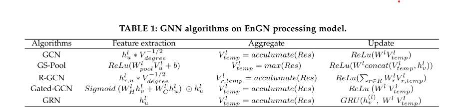

enhance the new GCN, read EnGN
enhance the new GCN, read EnGN
- [x] read the HyGcn paper again to get the detail of the computation overhead of the control of tiles(windows)
- [x] read EnGN
- [ ] change the new-gcn
menu
read the paper EnGN of the details
conclusion
main difference: the ring PE model for both aggregation and MLP. the new computational model for GNN the different TILing scheduling.
confusions:
1, this graph is wrong?? how it reduces it to 3, and what the graph mean, this is the most important contribution in this paper, but I can't understand it. link go to here
the issue and background
- issues
- how to tailor a unified architecture that efficiently supports the diverse GNN model.
- large graph, limited on-chip memory
- power-law distribution create an imbalanced connection
- Solutions
- ring-edge-reduce(RER)
- graph property aware dataflow(GPA) that decouples the vertex property and the hardware structure. and scheduling of the stages.
- graph tiling strategy. high degree of data reusability.
- use either row-oriented and col-oriented(!)
- 3 level cache, l2 is degree-aware vertex cache(DAVC)...
- GNN MODELS

- GCN
- 注意到，
里面，
是每个顶点的出度，而
- more explanation:https://www.topbots.com/graph-convolutional-networks/

- GraphSage-Pool(GS-pool)
- Relational Graph convolutional network(R-GCN)
- Gated graph convolution network(Gated-GCN)
- Graph Recurrent network(GRN)
- GCN
- motivation
- aggregation is expensive, we may change the input and the output for aggregation????-->section5
- hardware: HyGCN still fails to unleash the potential of the GNN acceleration:
- HyGCN 只适用于小图
- 20% vertices connected to 50-80% edges. but all vertices are evenly buffered!
- HyGCN使用前后端，不同的部分可能使用不均匀，统一的硬件更下有效
implementation
-
EnGN implementation
-

In this figure, we can find the model has 3 stages.

In this model, we can see GCN process MLP before agg

In this figure, we can see. aggregate is the main bottleneck

the overall arch

ring edge reduce(RER)
the detailed. The aggregate procedure needs to collect the information according to the edges information. In our design, the PE sends its data to the northern neighbors and receives the data sent from the southern neighbors for property aggregating. In this manner, a PE can select the relevant vertices to aggregate based on the control signal parsed from the edges during the data flow across the ring. (where the control flow from. what's the cost and implementation)
hard to understand here. how it did it?

I cannot under stand this optimization. In the previouse introduction. each PE can only send the data to north. and here???

the memory hierarchy for big nodes.

the tiling algroithm... it's the same but introduce different scheduling mechanism. HyGCN only have row-major.

Q=number of tiles,F=Q size. H, output size for a Q.
Section5, proofing
code modifacations
support algorithm to choose the best input and output.
algorithm:
divide the input to many chunks.